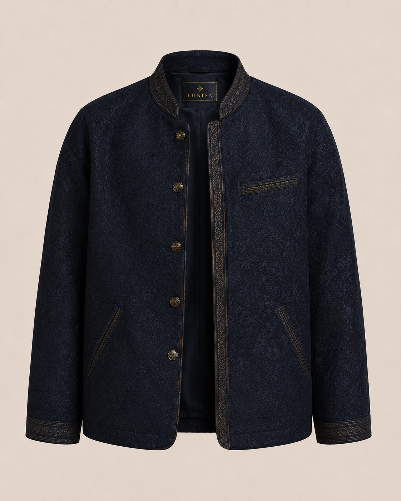

Asil Gece Ceketi
₺3.200
Asil Gece Ceketi, koyu tonları ve sade duruşuyla Lunisa'nın erkek koleksiyonunda yer alan modern bir tasarımdır.
Tasarım Hikayesi
Bu tasarım, gece lacivertinin güçlü etkisinden ve kültürel motiflerin zarif detaylarından ilham alınarak düşünülmüştür.
Ürün Özellikleri
- Sade ve güçü görünüm
- Koyu tonlarla modern tasarım
- Özel günlerde ve günlük şık kombinlerde kullanılabilir